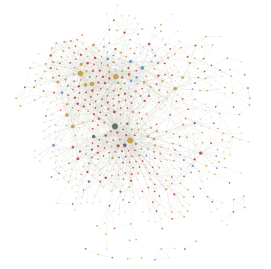
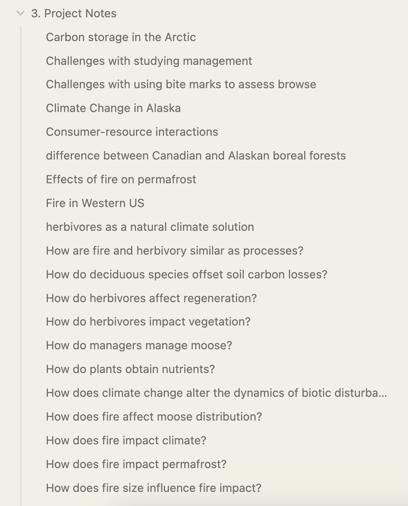
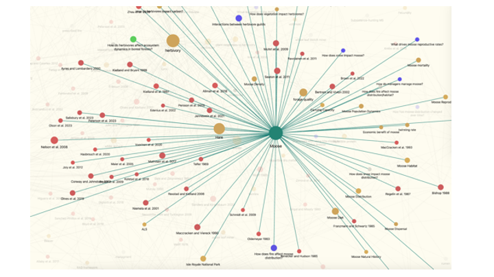

I’ve played around with many different research workflows over the years - physical notebooks, notes stored in infinite word documents, color-coded index cards when I was a brand new undergraduate writing my first research paper. I’ve gone back and forth since then about whether following a system is a really important tool or whether it’s a particularly creative procrastination technique. I’d like to think I’ve found a middle ground. My current system is automated as much as possible to cut down on the busy work of maintaining the workflow itself.

The Tools
In a sentence: I use Obsidian, paired with zotero, to index notes in what I’d call an extremely modified zettelkasten approach.
In more than a sentence: I keep notes on each article I read, linking concepts between them, and pulling together more in-depth thoughts in longer notes. Obsidian lets me save each note as a markdown file, indexed by the relevant reference in Zotero.
Saving, filing and reading articles
I import articles into zotero using the chrome extension, organize it roughly in a folder, and read it in PDF form within zotero on a tablet (which, now thanks to Zotero 6, syncs and saves highlights and annotations across devices).
From there, the Citations plug-in allows me to link my Obsidian notes to the zotero entry using citekeys generated by betterbibtex.
The Notetaking
So much has been written about the value of notetaking for knowledge production.
One of my favorite takes is How to take Smart Notes by Sönke Ahrens which positions notetaking as an integral (maybe the integral) step of nonfiction or research writing. For me, building a system for notes has always felt like a key way to focus on process, not outcome - knowledge production as a job can at best feel for me like endless opportunity, and at worst feels like an enormous sisyphus-ian void. Maintaining an annotated bibliography means I’m more likely to write every day, in some form, about something.
Once my citations are filed into zotero and I’ve updated all the fidly little plug-ins so obsidian and zotero are talking, then we get into the fun bits1.
1 I’m a good time at parties, I swear
I use three different types of notes: Reference Notes, Concept Notes and Project Notes.
Reference notes
I create Reference notes for the scientific papers I read - I try to follow a structure once assigned to me as a graduate student: a paragraph or two summarizing the article, a paragraph reviewing my own thoughts as I read, a sentence of takeaways and whatever citations I’d like to keep track of in a bulleted list at the end. Reviewing an article in that way can be an undertaking - I have a lot of notes in some stage of completion, and many for which a full summary might be overkill.
Concept notes
I create Concept notes that connect the ideas and concepts between reference notes - some of them are just tags (boreal, fire, herbivory), others turn into quick notes to mark definitions (words I had to look up, things like autotrophic respiration or thermophilization), and some end up as deep file drawers (like moose, which is a long list of average body weight, home range sizes, preferred forage species and other values I think I might use as parameters or citations some day).
Project notes
I start to create project notes to keep track of broader concepts that emerge across journal papers and concepts. I have project notes named things like are named things like How does climate change alter the dynamics of biotic disturbances? Or Shrub expansion in the Arctic - ideas I’ve started to pull together across articles.

This is the stage where the zettelkastan method guides start to describe spontaneous idea generating - some mystical point at which all the notes start to connect in interesting ways. Depending on the blog post, sometimes the zettelkastan can feel like a sales pitch, one where the “papers just write themselves!”. I have some skepticism around this - but I do agree that so far it’s been really useful to have a place to sort out some of these growing ideas. Some of my more developed project notes have started to read like the introduction to a literature review or a talk, which is exciting.

The weeds
Some workflow specifics, in no particular order
Obsidian templates
Obsidian lets you create templates for different types of notes, stored in the Template folder in your vault. I have one for each note type [visualize]
For a while, I would sort things into folders automatically, which I thought would incentivize me to finish notes I hadn’t sorted yet. But then the vault filled with so many unfinished notes that it made it hard to navigate. Now I’ve got Hazel set up to sort things automatically based on their tags, which helps.
Connecting reference notes to zotero
To connect my reference notes in obsidian to zotero, I use three plugins:
- the citations community plugin in obsidian
- the BetterBibText
- MarkDBConnect
Citations
I use their short citation (Author, Year) as the title and link each to their corresponding zotero entry using a citekey (the method for which is described further in the documentation for the plugin Citations). It’s not a perfect automation - sometimes I have to go in and manually edit the citekey to match the one in obsidian. I also had to change the obsidian settings to be XX, and the one in zotero is set as XX.
Some notes: Zotero crashes pretty regularly on me - aka, every first time I open it. My guess is it’s the extra add-ins and extensions, but I’ve been too lazy to double check or to look for a solution.
More resources
Some examples of similar workflows:
- https://martinezponciano.es/2021/04/05/research-workflow-as-a-phd-student-in-the-humanities/
- https://wippp.com/blog/taekman-zettelkasten-workflow-2023-using-devonthink-drafts-and-obsidian
- https://nicolevanderhoeven.com/blog/20210518-how-i-use-obsidian-at-work/#the-easier-way
- https://thesiswhisperer.com/2023/02/01/building-a-second-brain-for-writing-with-obsidian/
- https://notes.nicolevanderhoeven.com/obsidian-playbook/Using+Obsidian/01+First+steps+with+Obsidian/Obsidian
- https://notes.nicolevanderhoeven.com/sources/Presentation/Mine/The+Lost+Art+of+Taking+Good+Notes
A full list of tools
Obsidian
betterbibtex - creates citekeys that link zotero items to obsidian notes
Zotero
Zotero Chrome Extension - saves articles to zotero libraries within Chrome